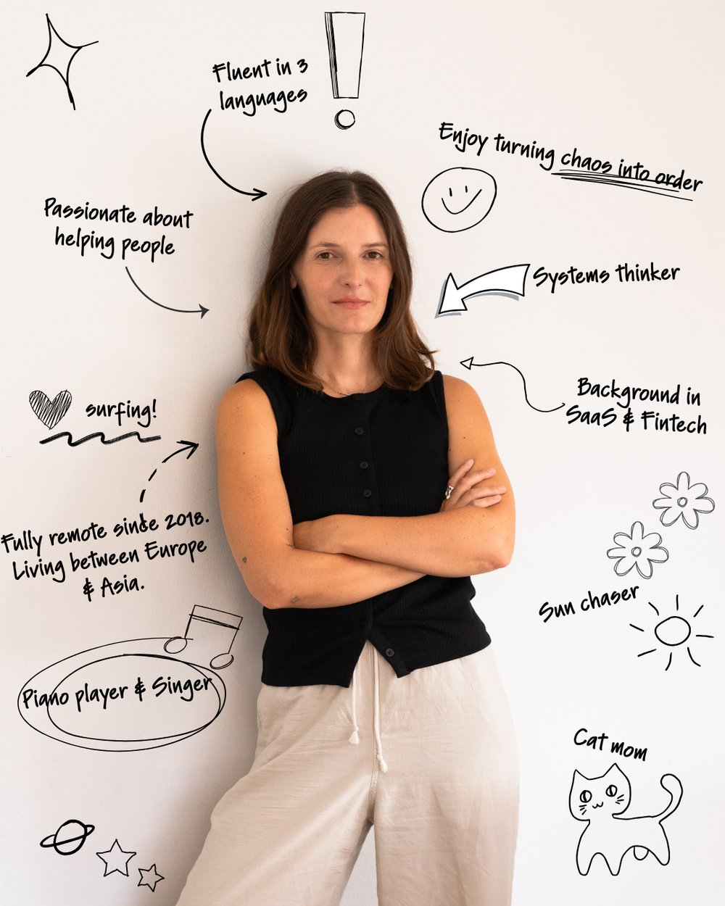

Operations partner for founders who move fast
I help founders build the systems that hold, so growth doesn't outrun the operations behind it — with a specialism in ADHD-founder environments.
Who I Work With
Solo-founders
Everything runs through you, and that has quietly become the ceiling on growth.
Early-stage founders
Growing faster than your processes. What worked at five people breaks at fifteen.
Co-founders
Sharing the load without a clear line on who actually owns what.
What I Do
I work in two ways: consulting with you on strategy and systems, and working directly alongside you to build and implement.
Process & Systems
Mapping how the business actually runs. Building processes that hold. Setting up the operational layer so nothing depends on one person.
Automations & AI
Bringing AI and automation into workflows in ways your team will actually use. Removing manual, repetitive work. This is part of all my work, not an add-on.
People & Delegation
Frameworks to get work off the founder's plate and onto the right person. Hiring and training support. Documentation so the business doesn't break when someone's away.
Project & Technical Setup
Managing workflows, technical integrations, and the day-to-day operational logistics that most consultants skip over.
Fractional COO
Stepping in as a hands-on senior operator, doing the work alongside your team.
Specialized in ADHD-founder environments
I've spent years inside founder-led businesses where the founder's brain moves faster than the systems around them can keep up.
I'm not an ADHD coach, and I don't have ADHD myself, but I understand how an ADHD brain works, and I know how to build with it, not against it.
I train teams on how to operate in a fast-moving environment and create systems tailored to how the specific business actually runs, not a generic playbook that doesn't fit.
I see the human brain and psychology as a critical part of how a business runs. Understanding how the founder's brain works, and how their team's brains work, matters just as much as the systems themselves. I don't just look at tools, systems, and processes. I look at the full picture, and the human factor is never something I lose sight of.
Interested? Let's talk.
60 minutes to map where operations are breaking down and where to start. You bring your situation, I bring an outside view and a clear eye for what's actually slowing you down. You walk out with clarity and a next step.
Book a Call ↗How I Work
I start by understanding the founder, how they think, what works for them, what doesn't. Every business is different because every founder is different.
I look at what can be automated and what should be. Not for the sake of automation, but because saving the founder and the business time and money matters.
I work as a real partner, building alongside you, not just for you. The people around you can actually understand and run what we build, because they were part of building it.
I believe in founders learning and growing into their role through the work. When you understand why a system exists, you're not dependent on someone else to fix it when things change.
Ways to Work Together
Advisory & Training
- Weekly strategy call
- Async support via email/Slack
- Periodic check-ins
- Guidance on delegation and process, discussed but not implemented by me
Operations Partner
- Bi-weekly/weekly working sessions
- Process review and setup
- Automations and AI integrated into workflows
- Project management and technical setup support
- Hiring/training guidance, delegation frameworks
- Ongoing async support
Fractional COO
- Everything in Tier 2
- Deep ownership of the operational layer
- Direct involvement in hiring, process design, team structure
- Strategic and tactical decisions
- On the ground as much as needed
Can't find the right fit? Every founder and every business is different. We can put together a custom agreement that actually fits how you work — best for anyone who wants to start with a conversation rather than a fixed package.
Reviews
I worked with Maria for a couple of months, and she helped me organise our internal systems and improve how I delegate tasks within my team. What I really appreciated is how practical she is. Her sessions are very hands-on, identifying what needs to change and how to fix it. I would definitely recommend working with her. She's direct, practical, and focused on real improvements.
A strong right-hand operator. Exactly what a fast-moving SaaS and consulting business needed.
Maria is an exceptionally talented and inspiring professional whose creativity, strategic vision, and dedication make every project she touches outstanding. Working with Maria is both a privilege and a masterclass in excellence.
About Me

Most founders I've worked with didn't struggle with vision. They struggled with everything that comes after.
Too many ideas at once, too many moving parts, and a team trying to keep up without quite knowing how. The gap between where a founder wants to go and what the business can actually execute on, that's where things break down.
After 7 years working alongside founders across different industries and stages, from early scrappy startups to scaling businesses, I've seen the same patterns repeat. The operational challenges that slow companies down are rarely unique. What's unique is how each founder's brain shapes them. That's the gap I work in.
I partner with founders and the people around them, VAs, EAs, operators, COOs, to build the operational layer that makes execution actually possible. Not generic systems copied from a playbook, but structures that work for how the founder actually thinks and operates.
Over time I've developed a specialism in businesses where the founder has ADHD. That's where the gap tends to be widest and most misunderstood. Once you understand how an ADHD founder actually processes information, makes decisions, and moves through the world, a lot of what looked like chaos starts to make sense. And once it makes sense, you can build around it.
I'm not an ADHD coach. I don't work on the founder. I work on the environment around them.
I've worked across SaaS, fintech, and project management before becoming the allrounder. I work exclusively with European clients, speak German, Russian, and English, and have lived experience as a fractional COO.
Ready to build the systems that hold?
Book a free 60-minute discovery call and walk out with clarity on where to start.
Book a Call ↗